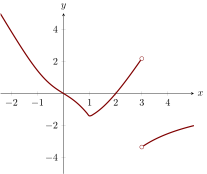

The graph of (the derivative of ) is shown below.
Assume is continuous for all real numbers.

On which of the following intervals is increasing?
is increasing where , i.e. on the intervals and .
Which of the following are critical points of ?
has a critical point at the zeros of , and the places where does not exist. In this
case, , , and .
Where do the local maxima occur?
A local maximum occurs at a critical point where the function transitions from
increasing to decreasing, i.e. the derivative passes from positive to negative. In this
case, we see that the local maxima occur at and .
Where does a point of inflection occur?
A point of inflection occurs when the concavity of changes. This is reflected in
the sign of changing. This only occurs at one point in this graph, namely
.
On which of the following intervals is concave down?
is concave down when . This occurs for on this graph. So the correct answer is to
select both and .